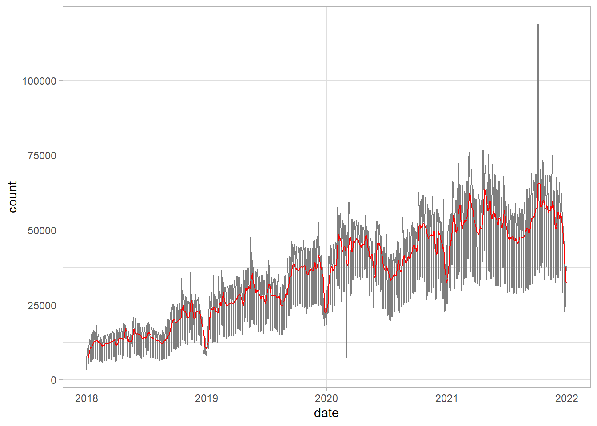
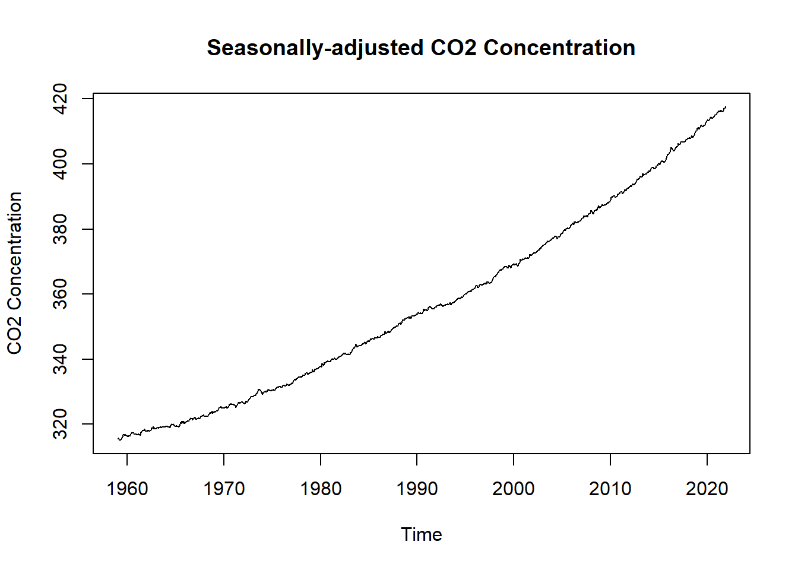

Chapter 3 Rolling and Expanding Windows
3.1 Rolling Window
- Moving lower and upper bound
3.1.1 Data
library(tsbox)
dl_dplyr <- cran_data %>%
filter(date >= as.Date("2018-01-01")) %>%
select(-package)
# tsbox::ts_ts() parses the Date column in a much easier way, making the
# conversion process easy to interpret
dl_ts <- dl_dplyr %>%
tsbox::ts_ts()## [time]: 'date' [value]: 'count'autoplot(dl_ts)
3.1.2 Calculating a Rolling Window
dl_dplyr_rolling <- dl_dplyr %>%
tq_mutate(
select = count,
mutate_fun = rollapplyr,
FUN = mean,
width = 7,
col_rename = "weekly_avg"
) %>%
tq_mutate(
select = count,
mutate_fun = rollapplyr,
FUN = mean,
width = 30,
col_rename = "monthly_avg"
)
weekly_ts <- dl_dplyr_rolling %>%
select(date, weekly_avg) %>%
ts_ts()## [time]: 'date' [value]: 'weekly_avg'ggplot() +
geom_line(data = dl_dplyr, mapping = aes(x = date, y = count), color = "grey50") +
geom_line(data = dl_dplyr_rolling, mapping = aes(x = date, y = weekly_avg), color = "red")## Warning: Removed 6 row(s) containing missing values (geom_path).
dl_rolling_ts <- dl_dplyr_rolling %>%
select(
date, weekly_avg
) %>%
ts_ts()## [time]: 'date' [value]: 'weekly_avg'dl_rolling_ts %>%
decompose(type = "multiplicative") %>%
autoplot()